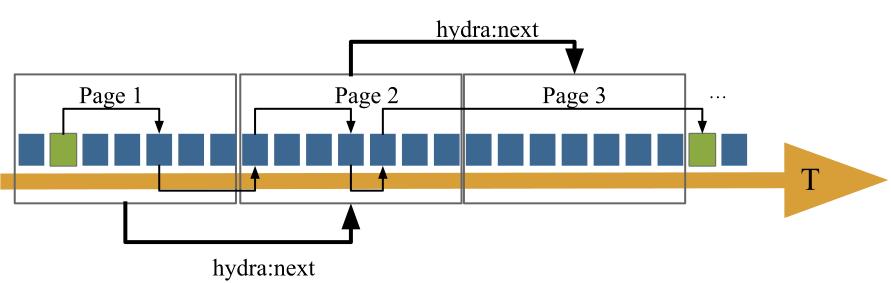
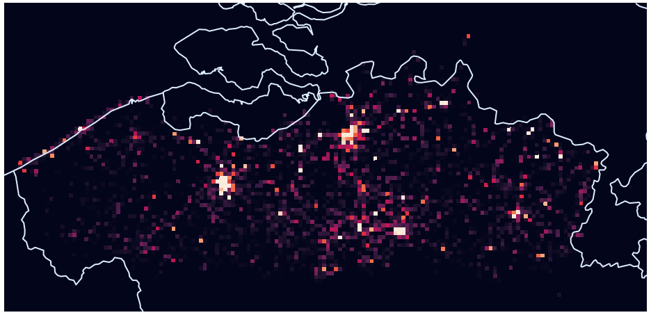
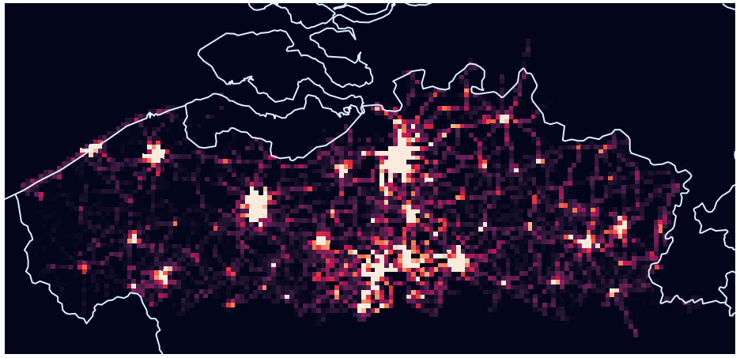
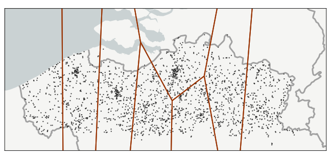
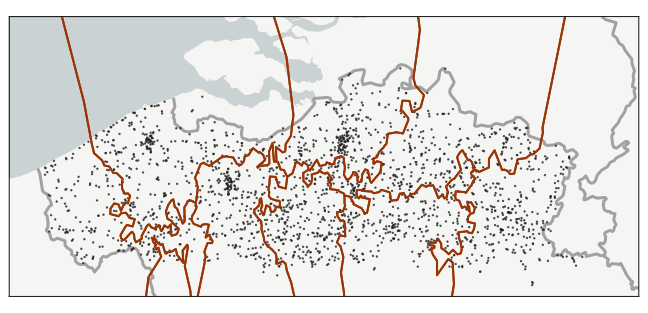
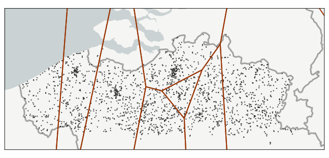
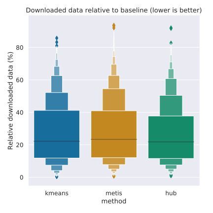
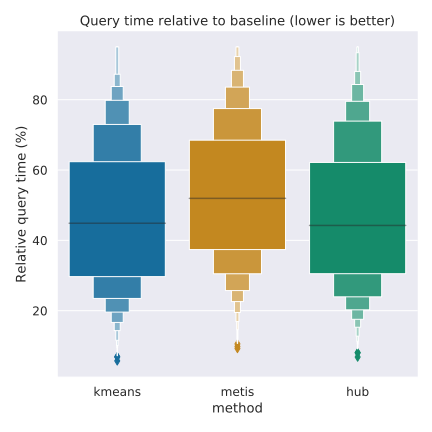
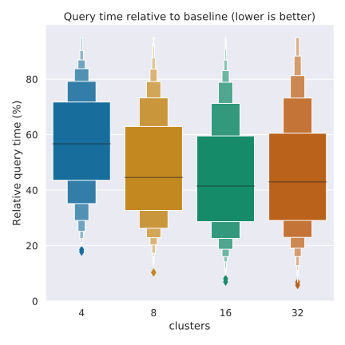
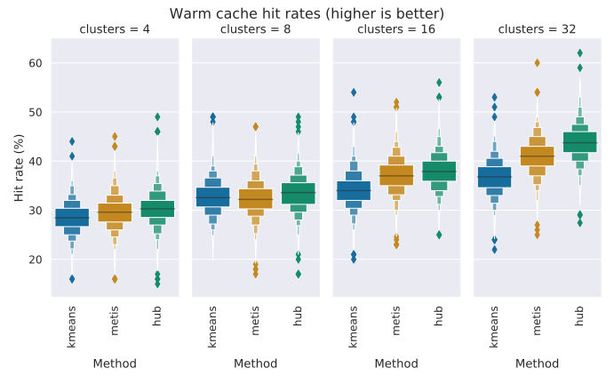

Geospatial Partitioning of Open Transit Data
Harm Delva, Julián Andrés Rojas, Pieter-Jan Vandenberghe, Pieter Colpaert, and Ruben Verborgh
IDLab, Ghent University – imec
using open transit data
- Would you rather
- interface with 4 APIs, or
- parse GBs of CSV files?
Linked Connections

Demand Varies by Region

Where people want to go

Where the buses are
- Context
- Publishing the data
- Fragmenting the data
- Findings
- Takeaways
Sets of Stops are Rigid

What if a new stop is added?
Changes are needed
Let users classify the stops

- Context
- Publishing the data
- Fragmenting the data
- Findings
- Takeaways
Voronoi diagrams

k-means

METIS

Voronoi cells around hubs

- Context
- Publishing the data
- Fragmenting the data
- Findings
- Takeaways
Setup
- Client-side route planning
- 3 methods + baseline
- 4, 8, 16, 32 partitions
- 5000 actual queries
- 3 metrics
Downloaded Data
Just a few % difference

Execution Times
Complex shapes are hard to use

Execution Times
More clusters is not better

Cache hit rates

What's happening to k-means?
just do it.
hdelva.be/slides/icwe2020
hdelva.be/articles/geospatial-linked-connections